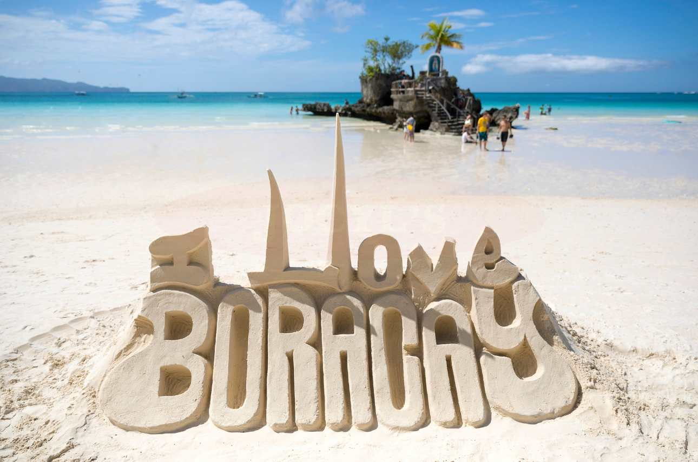
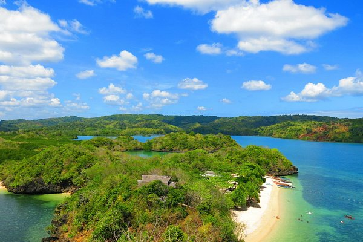
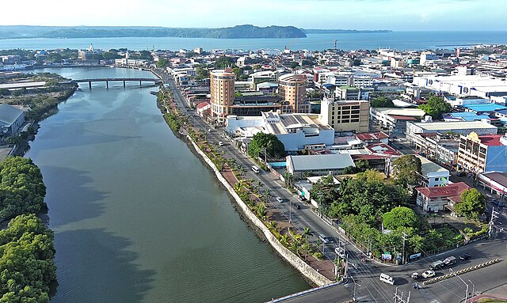
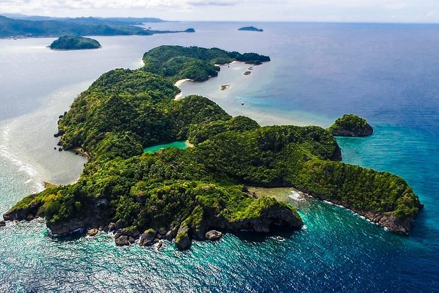
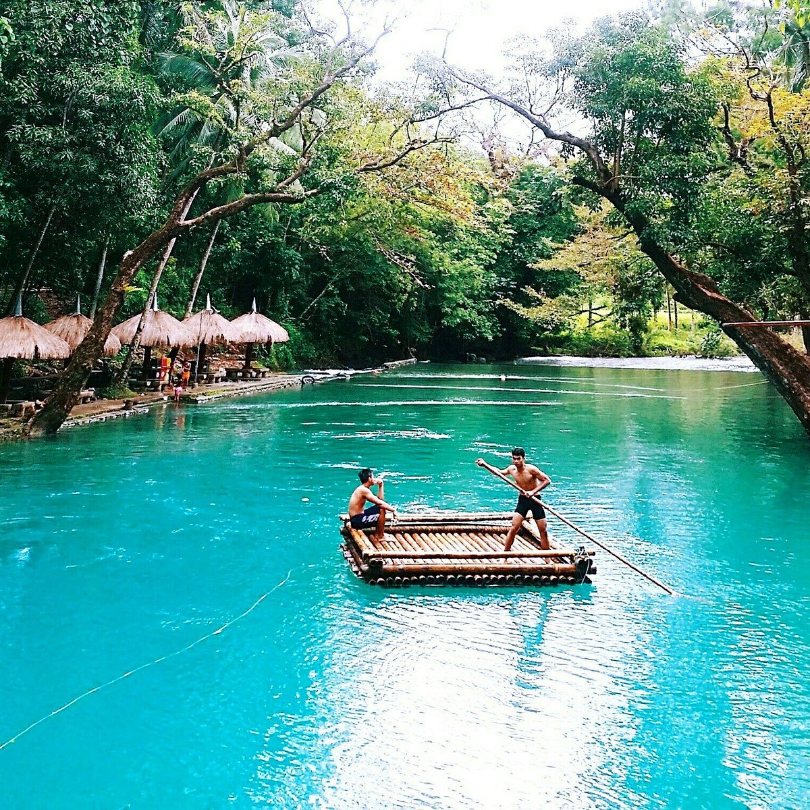

Boracay Island (Aklan)
Famous for its powdery white sand beaches and vibrant nightlife, Boracay is a popular destination for beach lovers and water sports enthusiasts. It offers a wide range of activities such as snorkeling, diving, and island hopping.
Gigantes Islands (Iloilo)

Located in the municipality of Carles, the Gigantes Islands are known for their pristine beaches, crystal-clear waters, and stunning rock formations. Visitors can enjoy island hopping, swimming, and exploring hidden caves.
Guimaras Island (Guimaras)
Known as the “Mango Capital of the Philippines,” Guimaras is famous for its sweet mangoes. Visitors can explore its beautiful beaches, hike to the Guisi Lighthouse, and visit the Trappist Monastery.
Iloilo City (Iloilo)
Antique Rice Terraces (Antique)

Located in the town of San Remigio, the Antique Rice Terraces are a hidden gem and offer a scenic view of the terraced rice fields. Visitors can hike through the terraces and experience the rural charm of the area.
Danjugan Island Marine Reserve & Sanctuary (Negros Occidental)
This marine reserve and sanctuary is a haven for snorkeling and diving enthusiasts. It is home to diverse marine life, coral reefs, and mangrove forests.
Malumpati Spring & Bugang River (Pandan, Antique)
Experience the refreshing waters of Malumpati Spring and go river tubing along the Bugang River. It's a great adventure for nature lovers and thrill-seekers.